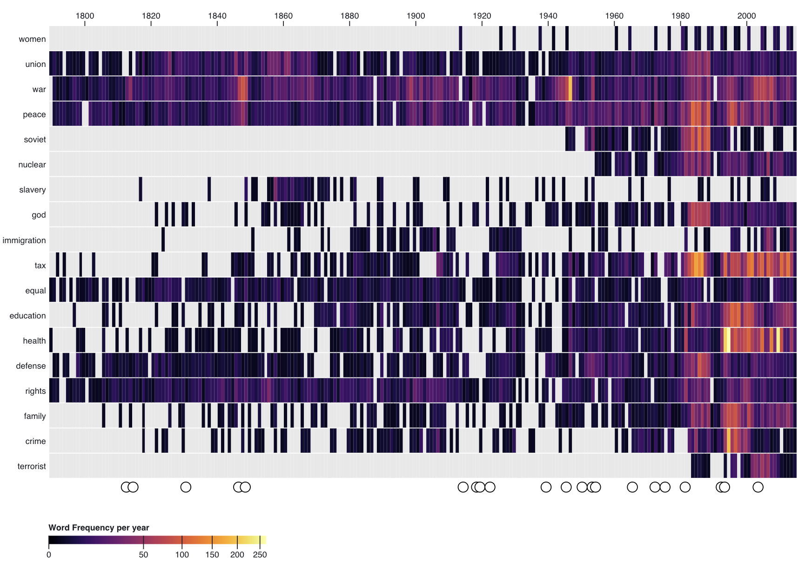

Word Frequeny in Political Speeches
Data Visualization
This data visualization shows the frequency that certain words were spoken in political speeches between 1789 and 2015. For example, the word "health" was spoken about most around Clinton's health care plan in 1993, and "war" was said most following World War II.

The data for the visualization came from the Corpus of Political Speeches, and the interactive visualization was created using D3. This project was done for the class Data Visualization at Columbia University, Spring 2020.
What was used
- D3
- Python
- Corpus of Political Speeches